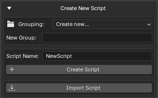

Creating Scripts¶
The Create New Script section allows you to quickly create Python scripts directly from Blender.
Scripts can be created in the main scripts folder or inside custom groups for better organization.

Create New Script Section
Creating a New Script¶
To create a new script:
- Open Create New Script
- Enter a script name
- Select a target group (optional)
- Press Create Script
The add-on automatically creates a valid Python file.
Example:
MyTool
Result:
MyTool.py
If the .py extension is not entered manually, it will be added automatically.
Script Name Validation¶
GH Script Manager performs several validation checks before creating a file.
The following are not allowed:
- Empty names
- Invalid file system characters
- Reserved Windows filenames
- Absolute file paths
- Path traversal (
..)
Examples of invalid names:
My:Tool
My/Tool
CON
../Tool
Automatic Script Template¶
New scripts are created with a simple header.
Example:
# Script Name: MyTool.py
This provides a starting point for development.
Script Groups¶
Script groups are folders used to organize scripts.
Groups help keep large script collections manageable.
Examples:
Utilities
Animation
Rigging
Export
Creating a New Group¶
Select:
Grouping → Create New...
Then enter a group name.
Example:
Utilities
The folder will be created automatically when the first script is added.
Nested Groups¶
Multiple folder levels are supported.
Examples:
Animation/Rigging
Tools/Export
Pipeline/Automation
Result:
Scripts
├── Animation
│ └── Rigging
├── Tools
│ └── Export
└── Pipeline
└── Automation
Existing Groups¶
All existing folders inside the scripts directory automatically appear in the Grouping dropdown.
No manual registration is required.
The list updates whenever scripts are refreshed.
Automatic Folder Creation¶
When creating a script inside a group:
Animation/Rigging
GH Script Manager automatically creates missing folders.
Example:
Scripts
└── Animation
└── Rigging
└── MyRigTool.py
Opening the Script After Creation¶
After a script is created, it opens automatically.
The editor depends on your settings:
| Configuration | Result |
|---|---|
| Custom Editor Disabled | Default system text editor opens |
| No Supported System Editor | Blender Text Editor opens as fallback |
This allows immediate editing without manually locating the file.
Duplicate Script Protection¶
The add-on prevents accidental overwriting.
If a file already exists:
MyTool.py
and you attempt to create another file with the same name in the same location, creation will be cancelled.
An error message will be displayed.
Typical Workflow¶
Example workflow:
- Create a group:
Utilities
- Create a script:
RenameObjects
- Script is created:
Utilities/RenameObjects.py
-
The editor opens automatically
-
Start writing code